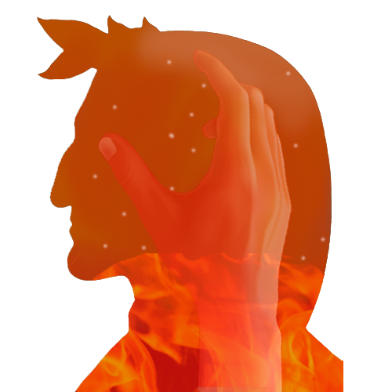

"Abandone Toda Esperança Aquele Que Por Aqui Entrar"
A Divina Comédia é um poema épico escrito por Dante Alighieri no século XIV (14), sendo dividido em Inferno, Purgatório e Paraíso. A Divina Comédia propõe que a Terra está no meio de uma sucessão de círculos concêntricos que formam a Esfera armilar e o meridiano onde é Jerusalém hoje, seria o lugar atingido por Lúcifer ao cair das esferas mais superiores e que fez da Terra Santa o Portal do Inferno. Portanto o Inferno, responderia pela depressão do Mar Morto, onde todas as águas convergem, e o Paraíso e o Purgatório seriam os segmentos dos círculos concêntricos que juntos respondem pela mecânica celeste e os cenários comentados por Dante, num poema envolvendo todos os personagens bíblicos do Antigo ao Novo Testamento, que são costumeiramente encontrados nas entranhas do Inferno sendo que os personagens principais da Divina Comédia são o próprio autor, Dante Alighieri, que realiza uma jornada espiritual pelos três reinos do além-túmulo, e seu guia e mentor nessa empreitada, Virgílio - o próprio autor da Eneida.
O Limbo
É destinado aos pagãos virtuosos e aos não batizados, àqueles que morreram antes da vinda de Jesus Cristo, suas almas vagam pela mais completa escuridão, o que representa a não iluminação das mentes que não conheceram o Evangelho e seus ensinamentos. Essas almas que se encontram no primeiro círculo não recebem nenhum castigo, porém, não terão a oportunidade de conhecer Deus.
Vale dos Ventos
Neste círculo, estão aqueles que cometeram o pecado da luxúria, que são atormentados por furacões e ventanias representando os vícios da carne, que assim como o vento, os levavam de encontro ao pecado. Também é possível encontrar Minos, que foi Rei de Creta enquanto viveu, de acordo com Dante, ele é quem decide para qual círculo o pecador será levado.
Lago da Lama
Encontram-se os gulosos, atolados numa lama suja, são punidos ao ficarem prostrados debaixo de uma forte chuva de granizo, água e neve, sendo arranhados, esfolados e dilacerados por um enorme cão de três cabeças chamado Cérbero, que retrata o apetite sem fim. Assim, os que gostavam de comer acabavam virando a comida.

Colinas de Rocha
É o destino dos pródigos e avarentos, que possuem como punição, rolar com os próprios peitos grandes pesos, que representam as suas riquezas e estão fadados a trocarem injúrias entre si. O guardião da entrada desse círculo é Pluto, deus da riqueza, filho de Deméter na mitologia grega.
Rio Estige
Abriga os acusados de ira, estes ficam amontoados em um lago formado de água e sangue borbulhante, batendo-se e torturando-se. No fundo do Estige, estão os rancorosos que não demonstraram sua ira e permanecem proibidos de subir à superfície. Além de ter que lidar com demônios, ainda dão de cara com Medusa e com as três Fúrias, criaturas que torturam as almas pecadoras no inferno dos gregos. Entretanto, conseguiram passar.
Cemitério de Fogo
Lugar dos que em vida foram hereges, os que não acreditaram na existência de Deus e de Jesus como seu Filho. A punição que eles recebem é o sepultamento em túmulos abertos, de onde sai fogo. É aqui que podemos observar melhor essa mescla que Dante faz entre o cristianismo e a mitologia grega.

Vale do Flegetonte
Esse círculo é dividido em três vales. Para aqueles que foram violentos contra o próximo, Centauros atiram flechas contra às almas que se afogam em sangue. Para os suicídas, serão transformados em árvores mortas e para aqueles que praticam violência contra Deus, irão permanecer em um deserto de areia flamejante.
Malebolge
É dividido em dez fossos, onde são punidos diversos pecados:
Vale do Flegetonte
Esse círculo é dividido em três vales. Para aqueles que foram violentos contra o próximo, Centauros atiram flechas contra às almas que se afogam em sangue. Para os suicídas, serão transformados em árvores mortas e para aqueles que praticam violência contra Deus, irão permanecer em um deserto de areia flamejante.